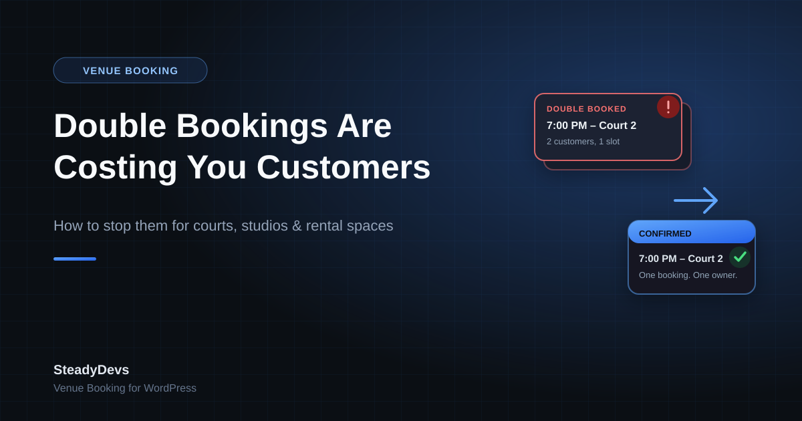

Double Bookings Are Costing You Customers: How to Stop Them for Courts, Studios and Rental Spaces
There's a particular kind of bad moment that venue owners know well: a customer arrives for their booked slot—a court, a room, a bay, a table—and someone else is already using it. Two different bookings, one resource, one time. Whoever made the mistake, the customer standing there doesn't care whose fault it was. They just know your business let them down.
Double bookings are one of the most reputation-damaging failures a booking-based business can have, and they keep happening even in venues that are careful—because the tools most venues use were never designed to prevent them.
Why Double Bookings Keep Happening
Multiple people, one calendar, no locking
If two staff members can both see a shared Google Sheet or calendar and both write to it, there's a race condition built into your operation. Staff member A sees the 7pm slot as open and confirms it with a customer on the phone. Two minutes later, staff member B sees the same slot—update hasn't synced, or they simply didn't refresh—and confirms it with someone else. Nobody did anything wrong; the tool just wasn't built to stop it.
Bookings taken across too many channels
WhatsApp, phone calls, walk-ins, a contact form, a Facebook message—the more channels a booking can come in through, the more places the same slot can get confirmed twice, because no single source of truth is checked before saying yes.
Manual entry lag
Even a diligent staff member who checks the calendar before confirming a slot is checking a calendar that reflects reality a few minutes late—because entering each booking takes time, and busy periods mean more bookings are happening in that lag window.
The pattern to notice: double bookings cluster around your busiest hours and days—exactly when they do the most damage, because there's no easy alternative slot to offer the customer who loses out.
What Actually Prevents Double Bookings
The fix isn't "be more careful"—careful staff already make this mistake, because the problem is structural, not human. What actually closes the gap is a system where the check and the confirmation happen as one atomic step, against one shared source of truth, the moment a booking is approved.
- One resource, one calendar, checked automatically. Every booking request is checked against existing confirmed bookings for that exact resource, date and time before it can be approved—not checked by a person glancing at a spreadsheet.
- Approval as the single gate. Bookings arrive as pending and only become confirmed when approved. The system refuses to let a second pending booking be approved for a slot that's already confirmed, no matter which channel it came from.
- All channels feeding the same system. If your website booking form, walk-ins and phone bookings are all entered into the same underlying calendar, there's only ever one place a slot can be marked as taken.
- Real-time availability shown to customers. When customers see live availability themselves, most of the ambiguity that causes double-booking attempts disappears before it starts—they simply can't select a slot that's already gone.
How This Looks in Practice
This is the exact problem SteadyDevs Venue Booking was built to remove for WordPress sites. Customers see live availability in a multi-step booking flow, every booking lands in an admin approval queue, and the plugin refuses to approve a resource + date + time combination that's already confirmed—so the same slot can never be double-booked, no matter how many requests come in for it.
You still get the final say on every booking—reject a customer with a history of no-shows, adjust a request, or simply confirm it—but the plugin has already done the hard part: guaranteeing that whatever you approve doesn't collide with something else.
Give Every Slot One Owner, Automatically
SteadyDevs Venue Booking adds live availability and double-booking protection to your existing WordPress site. Try it free for 14 days—no credit card required.
Start Your Free TrialWhat to Do If You're Relying on a Shared Spreadsheet Today
If a double booking hasn't happened to you yet, that's luck, not process—and it's worth fixing before it does rather than after. A few practical steps if you're not ready to move to a full booking system today:
- Reduce the number of channels that can create a confirmed booking without checking the same calendar first.
- Make one person (or one system) the final confirmer for busy periods, so confirmation isn't happening in parallel across staff.
- Build a habit of refreshing the shared calendar immediately before confirming any booking, especially in peak hours.
- Track how often double bookings actually happen for a month—most owners underestimate it until they count.
These steps reduce risk, but they don't remove it—a shared spreadsheet has no way to physically stop two people confirming the same slot at the same time. The only complete fix is a system where the check and the approval are the same action.
The Bottom Line
A double booking costs more than the slot itself—it costs the customer's trust, and often their future business. It's not a training problem or a carelessness problem; it's a gap in the tooling. Closing that gap doesn't require replacing your website or your workflow, just adding a booking layer that treats "one slot, one booking" as a rule the system enforces, not a hope you rely on.
Frequently Asked Questions
Careful staff already try this, and double bookings still happen, because the root cause is structural—multiple people or channels writing to a calendar with a lag between checking and confirming. A system that checks and confirms as one action removes the gap entirely.
With a proper booking system, only one request can be approved for a given resource, date and time—the second is automatically blocked once the first is confirmed, so it can never be approved into a collision.
No—protection and approval are separate. You still approve, reject or cancel every booking yourself; the system's job is only to guarantee that whatever you approve doesn't already conflict with a confirmed booking.
Yes, as long as every booking—regardless of which channel it came in through—gets entered into the same underlying system before being confirmed. The protection only works if there's one shared source of truth.
It matters most for busy periods, but even a single-court or single-room business can lose a valuable customer to one bad double booking. The smaller the business, the more one lost customer tends to hurt.